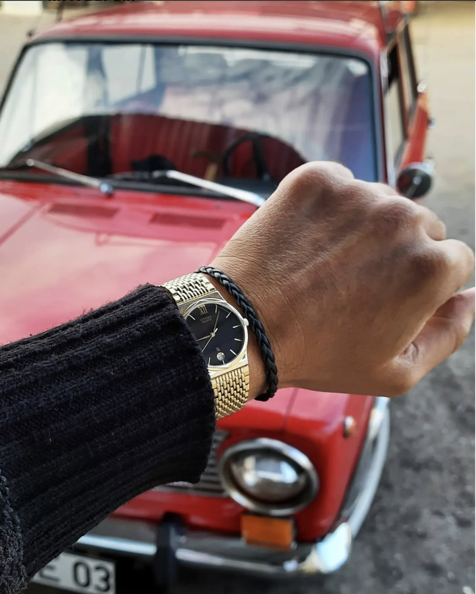

About Us
Hello, I am Koray. I am interested antiqua watches and antiqua objects. This is my hobbie.
I usually buy watches made in the 80's or 90's. Besides I buy antiqua object in the 50's or 70's.
I will convert this hobbie into my job.
